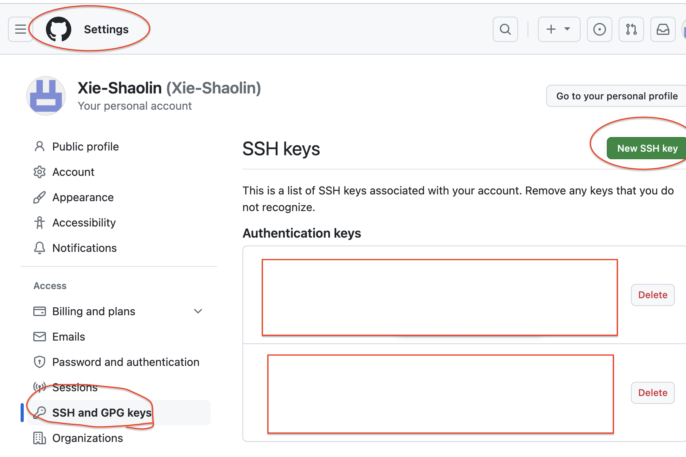
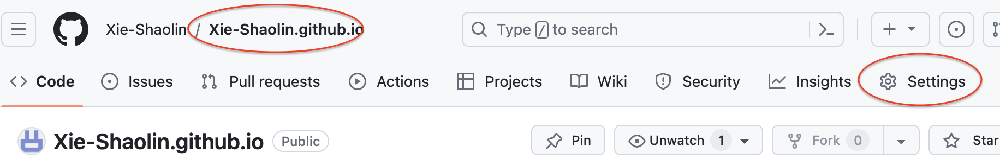
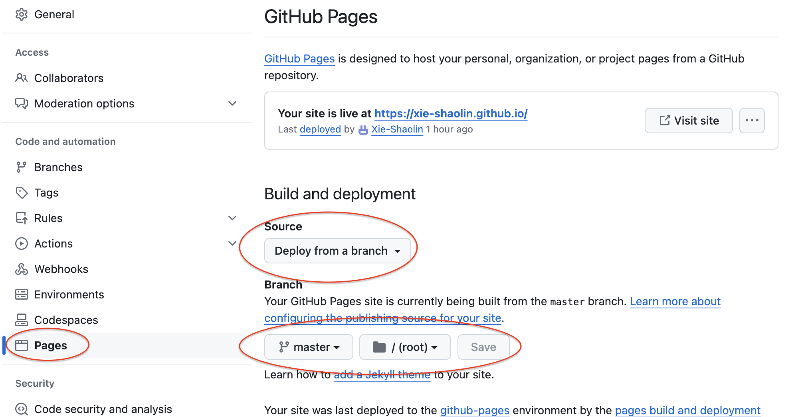
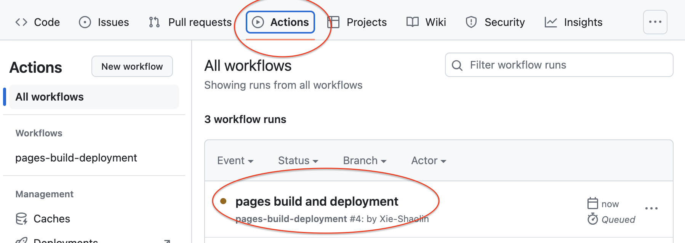
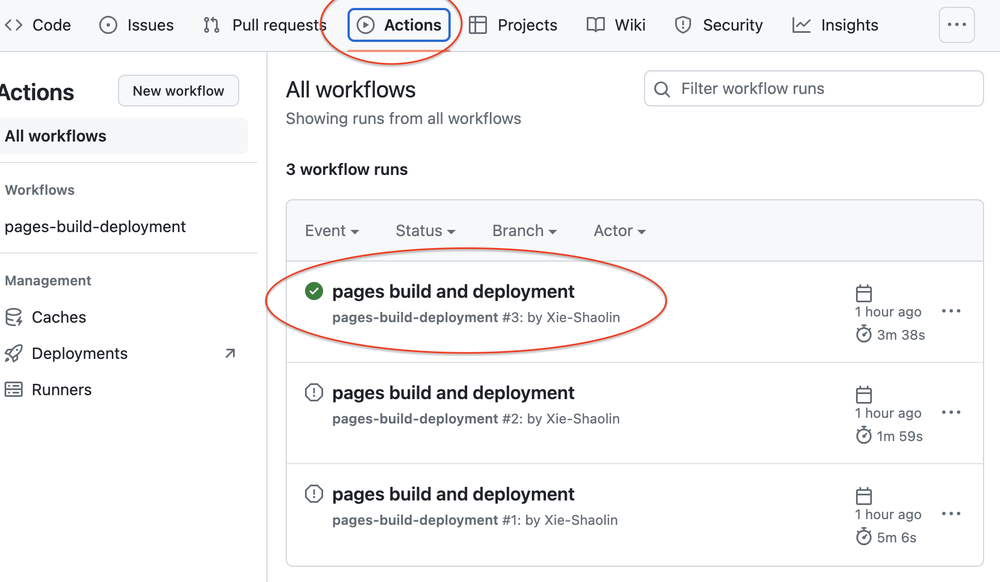
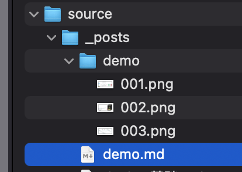
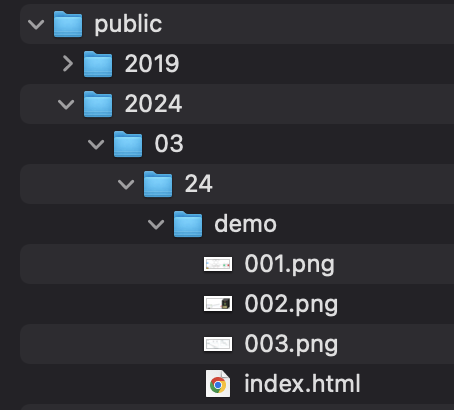
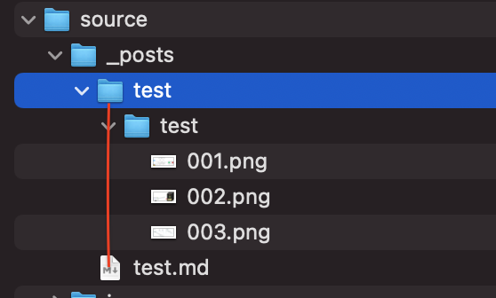

在本地启动
- 下载生成个人博客所需要的软件/环境：git，node.js
- Hexo 的安装与配置
- 创建一个空文件夹（如命名 blog），之后的所有操作都在这个文件夹里进行
- 安装 hexo：
cnpm install -g hexo-cli - 查看是否安装成功：
hexo v - 初始化 blog 目录：
hexo init。 - 生成项目：
hexo generate或者hexo g。这一步是把 md 文件生成 html 文件 - 启动本地服务：
hexo server或者hexo s。访问：http://localhost:4000/
安装遇到的问题：
我把我安装的文件，直接拖到/blog/source/_posts 目录下，接着我运行hexo s和hexo g都会报如下错误：
YAMLException: unidentified alias
因为heox g生成博文，是会检查你的文件有没有按照 hexo 的格式。其格式要求为：
---
title: Hello World
date: 2013/7/13 20:46:25
---
只要添加上面格式，就不会报错了
使用 GitHub 提供的免费服务器
设置 git 用户名和邮箱
# 设置
$ git config --global user.name "username"
$ git config --global user.email "email"
# 查看
$ git config user.name
$ git config user.email
- 加–global 是为所有 git 项目设置，不加则是在当前目录的 git 项目设置
- 这里的 yourname 输入你的 GitHub 用户名，youremail 输入你 GitHub 的邮箱。这样 GitHub 才能知道你是不是对应它的账户。
使用 ssh 免密登录
生成秘钥：
ssh-keygen -t rsa -C "youremail"[!CAUTION]
在运行这个命令的时，日志如下：
xieshaolin@xieshaolindeMacBook-Pro blog % ssh-keygen -t rsa -C “xxxxxx@qq.com“ Generating public/private rsa key pair. Enter file in which to save the key (/Users/xieshaolin/.ssh/id_rsa): /Users/xieshaolin/.ssh/id_rsa already exists. Overwrite (y/n)? y Enter passphrase (empty for no passphrase): Enter same passphrase again: Your identification has been saved in /Users/xieshaolin/.ssh/id_rsa. Your public key has been saved in /Users/xieshaolin/.ssh/id_rsa.pub..ssh/id_rsa already exists.：提示我秘钥已经存在。这是我之前已经配置过的。Enter passphrase (empty for no passphrase):如果这里直接按回车，那么之后提交拉取 github 的代码，就不需要提交密码。如果这里输入值的话，比如 xxx；那么以后每次拉取或者推送都需要输入 xxx 的密码
获取密钥：
cat ~/.ssh/id_rsa.pubxieshaolin@xieshaolindeMacBook-Pro blog % cat ~/.ssh/id_rsa.pub ssh-rsa AAAAB3N............uExy1kddkoT2A/V84LdrCaBUJJGM= “xxxxx@qq.com“把这行秘钥复制到 github 上面

在 github 上运行
在 git 上创建仓库，仓库名必须是：username.github.io。如我 github 的用户名是 Xie-Shaolin，建立的仓库就是 Xie-Shaolin.github.io。
设置 pages：
在仓库的 Settings 里面
做如下配置：

下载 github 部署插件：运行命令：
cnpm install hexo-deployer-git --save配置
/blog/_config.yml文件：deploy: type: 'git' repo: git@github.com:Xie-Shaolin/Xie-Shaolin.github.io.git branch: master[!CAUTION]
如果 这么配置：
repo: https://github.com/Xie-Shaolin/Xie-Shaolin.github.io.git等我们启动时，会出现如下异常：
xieshaolin@xieshaolindeMacBook-Pro blog % hexo d ...... remote: Support for password authentication was removed on August 13, 2021. ...... Error: Spawn failed ......意思是：自从 21 年 8 月 13 后不再支持用户名密码的方式验证了，需要创建个人访问令牌(personal access token)。
清除之前生成的项目：
hexo clean（可以清除之前项目的一些问题）在本地生成项目：
hexo g把项目部署到 GitHub 上：
hexo d或者hexo deploy[!NOTE]
首先提交到 git 仓库的时候并不是马上就可以访问，需要等项目部署完
下面是正在部署的样子：
下面是部署成功的样子：
其次，如果 GitHub 创建个人主页报错 404 There is not a GitHub Pages site here.
那么很可能是 pages 页面没有设置好，或者项目正在部署当中
安装主题
官方支持的主题
克隆：要在 blog 目录下
git clone https://github.com/yelog/hexo-theme-3-hexo.git themes/3-hexo修改
_config.yml的配置theme: 3-hexo
hexo 插入图片
官方如何插入图片
打开
package.json文件，确认当前安装并启用的渲染插件是hexo-renderer-marked：{ // ... "dependencies": { // ... "hexo-renderer-marked": "^6.2.0" // ... } // ... }如果没有，就下载插件：
npm install hexo-renderer-marked --save配置
_config.ymlpost_asset_folder: true # 打开资源文件管理功能 marked: prependRoot: true # 将文章根路径添加到文章内的链接之前。此为默认配置。 postAsset: true # 在所有链接开头添加文章根路径之前，先将文章内资源的路径解析为相对于资源目录的路径
hexo new demo：会在_posts目录下生成demo.md文件和demo文件夹，接着像 demo 文件夹里面存如几张图片在 demo 引入图片
 [comment]: <> (要想在 hexo 里面显示，必须这么写，但在 typora 或者其他编辑器里面无法显示) [comment]: <> (这个可以在 typora 里面显示，但是无法再 hexo 里面显示)
hexo g：生成项目 public比较 index.html 的路径：
项目的根路径是从 public 开始的
demo/003.png>>>>>>>/demo/003.png>>>>>> 无法访问图片003.png>>>>>>/2024/03/24/demo/003.png>>>>>> 可以访问图片
修改 hexo-renderer-marked
打开./node_modules/hexo-renderer-marked/lib/renderer.js，按如下方式修改代码：
// Prepend root to image path
image(href, title, text) {
const { hexo, options } = this;
const { relative_link } = hexo.config;
const { lazyload, figcaption, prependRoot, postPath } = options;
if (!/^(#|\/\/|http(s)?:)/.test(href) && !relative_link && prependRoot) {
if (!href.startsWith('/') && !href.startsWith('\\') && postPath) {
const PostAsset = hexo.model('PostAsset');
// findById requires forward slash
// ============================== 以下代码有改动 ==============================
const fixPostPath = join(postPath, '../');
const asset = PostAsset.findById(join(fixPostPath, href.replace(/\\/g, '/')));
// const asset = PostAsset.findById(join(postPath, href.replace(/\\/g, '/')));
// ============================== 以上代码有改动 ==============================
// asset.path is backward slash in Windows
if (asset) href = asset.path.replace(/\\/g, '/');
}
href = url_for.call(hexo, href);
}
let out = `<img src="${encodeURL(href)}"`;
if (text) out += ` alt="${text}"`;
if (title) out += ` title="${title}"`;
if (lazyload) out += ' loading="lazy"';
out += '>';
if (figcaption) {
if (text) out += `<figcaption aria-hidden="true">${text}</figcaption>`;
}
return out;
}
在 hexo g之后，再比较 index.html 的路径：
demo/003.png>>>>>>>/2024/03/24/demo/003.png>>>>>> 可以访问图片003.png>>>>>>/003.png>>>>>> 无法访问图片
也就是在修改代码之后， 可以实现 hexo 和本地编辑器的双访问
我的解决方式
我使用的是<img> 标签引入图片，hexo 不会去重写<img>标签里面的相对路径
<img src="test/001.png" width="450px" />
我的解决方式是在 test 下载放一个 test 目录，目录结构如图：
在hexo g之后，生成的项目结构为：
这样，就实现了访问
hexo 的使用
更多内容可以参考这篇博客
设置高亮：
关闭hexo字段的高亮，在
_config.yml里面作如下设置：# _config.yml syntax_highlighter: # empty开启
3-hexo主题的高亮，在/themes/3-hexo/_config.yml里面作如下设置highlight: on: true # true开启代码高亮，开启需要关闭博客 _config.yml 中的 highlight lineNum: false # true显示行号 copy: true # 复制功能 theme: github
开启字数统计
下载插件：
npm i hexo-wordcount --save修改
/themes/3-hexo/_config.ymlword_count: true
更换头像
方式一：替换
source/img/avatar.jpg图片。方式二：修改
/themes/3-hexo/_config.yml# 你的头像url avatar: /img/avatar.jpg favicon: /img/avatar.jpg
分类排序
默认按照首字母正序排序，由于中文在
nodejs环境下不能按照拼音首字母排序，所以添加了自定义排序方式，在主题下_config.yml中找到如下配置，category.sort则是定义分类顺序的。规则：在
sort中定义的category比 没有在sort中定义的更靠前# 文章分类设置 category: num: true # 分类显示文章数 sub: true # 开启多级分类 sort: - 读书 - 工具 - 大前端 - 后端 - 数据库 - 运维 width: lg: 120 # 1468px<屏幕宽度 左侧分类宽度 md: 100 # 1024px<屏幕宽度<=1468px 左侧分类宽度 sm: 100 # 426px<屏幕宽度<=1024px 左侧分类宽度（ipad）文章排序
文章列表默认按照创建时间（如下文章内定义的
date）倒序。使用
top将会置顶文章，多个置顶文章时，top定义的值越大，越靠前。--- title: 每天一个linux命令 date: 2017-01-23 11:41:48 top: 1 categories: - 运维 tags: - linux命令 ---要注意对文章进行分类
每篇文章最好写上文集和标签，方便筛选和查看。
一般推荐一篇文章设置一个文集，一个或多个标签categories:文集，为左侧列表tags:标签，通过#来筛选
例如 本篇文章的设置--- title: 3-hexo使用说明 date: 2017-03-23 15:13:47 categories: - 工具 tags: - hexo - 3-hexo ---设置模板
blog根目录 scaffolds/post.md
加入categories,tags等，这样以后通过 hexo new 生成的模板就不用写这两个单词了。--- title: {{ title }} date: {{ date }} categories: tags: ---配置首页
首页路径为：
/themes/3-hexo/layout/indexs.md。只需要修改这个文件就可以了文章数统计/字数统计
<!-- 我这里是借用了code的样式，所以直接使用code标签。 自定义样式，可加入style属性设置--> <code class="article_number"></code> <code class="site_word_count"></code>流量统计
<!-- 我这里是借用了code的样式，所以直接使用code标签。 自定义样式，可加入style属性设置--> <code class="site_uv"></code> <code class="site_pv"></code>
修改作者和配置网站信息
配置文件不是主题的配置，而是hexo的配置：
blog/_config.yml# Site title: Notes # 网站标题 subtitle: '' # 网站副标题 description: '' # 网站描述 keywords: # 网站的关键词。支持多个关键词。 author: XieShaoLin # 您的名字 language: zh-CN # 网站使用的语言。 timezone: 'Asia/Shanghai' # 网站时区配置的具体信息可以查看官网
转载请注明来源，欢迎对文章中的引用来源进行考证，欢迎指出任何有错误或不够清晰的表达。可以在下面评论区评论，也可以邮件至 1909773034@qq.com